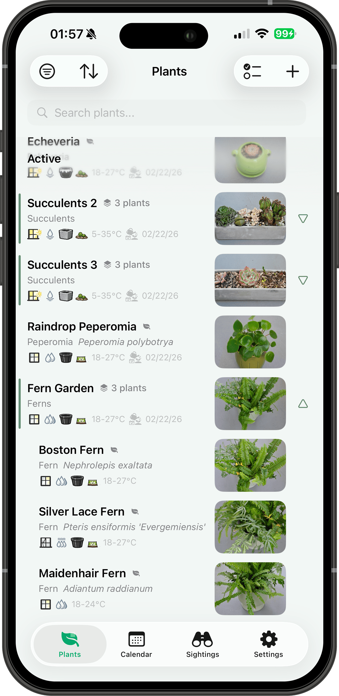
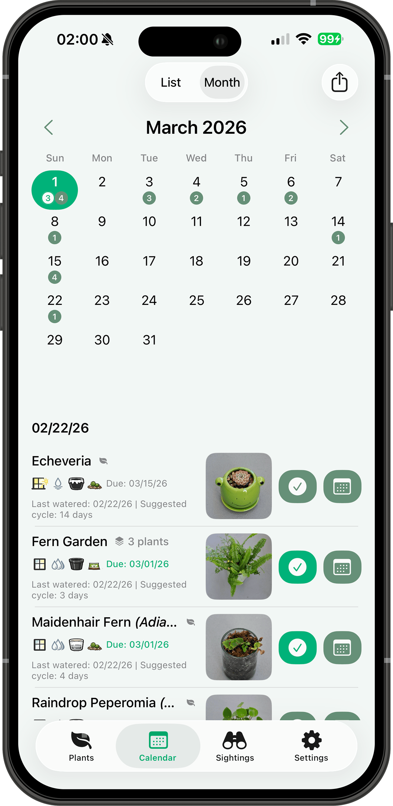
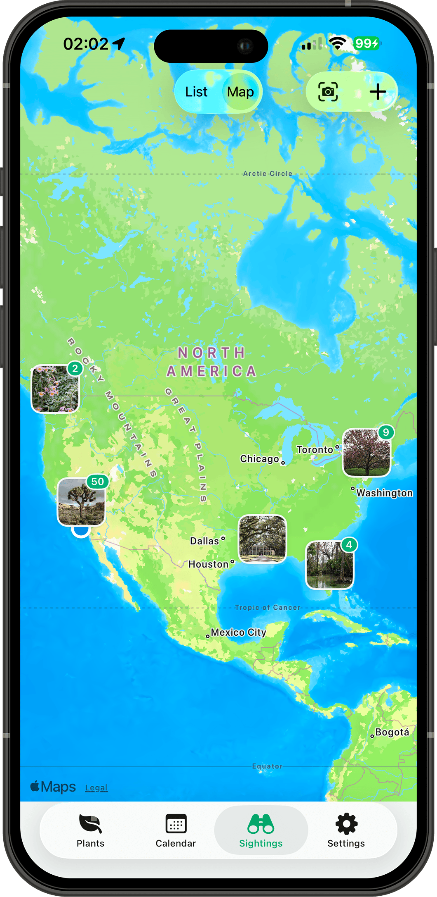
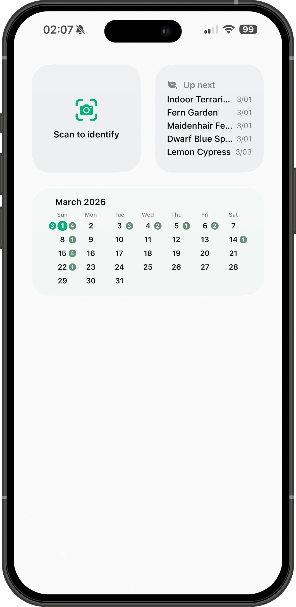
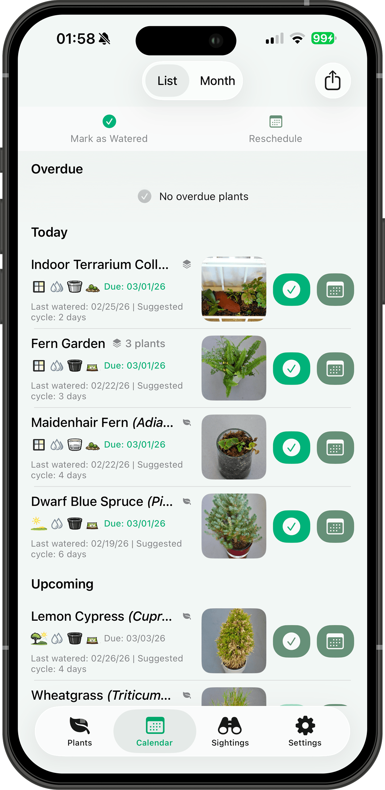
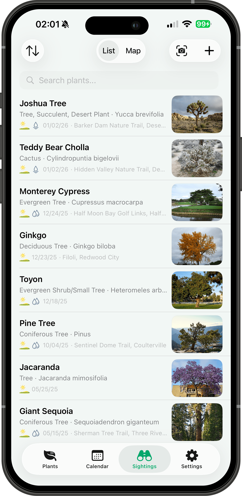

应用预览






功能
植物与收藏
- 三种识别方式：AI 识别并自动填写养护信息、872+ 离线植物建议、端侧 ML 覆盖 7800+ 物种。
- 记录名称、光照、湿度、排水、土壤、花盆材质和季节浇水——一个档案全部搞定。
- 按收藏整理——客厅、阳台、同盆植物——统一管理或一键浇水。
浇水与日历
- 设置每季浇水间隔，春夏秋冬自动切换。
- 列表视图显示逾期、今日、即将浇水；月视图一目了然每日数量。
- 补记历史浇水、改期、批量标记，或一个收藏一键全浇。
照片与养护记录
- 每株植物无限照片，7 个分类：种子、生长、叶片、花朵、果实、问题、病虫害。EXIF 日期自动提取。
- 生长测量含趋势分析。施肥追踪含 NPK 比例、用量和方式。修剪记录按类型。
发现与地图
- 快速扫描记录野外植物——AI 当场识别物种。一次最多添加 10 条，GPS 自动从照片或设备获取。
- 互动地图，带照片标注、聚合徽章，点击即可预览。
主屏小组件
- 即将浇水——一览哪些植物需要浇水。
- 浇水日历——当月视图与每日数量。
- 扫描识别——打开相机即刻识别植物。
提醒
- 每天在你设定的时间提醒浇水，仅限正在养护的植物。
分享
- 生成精美植物卡片——单株或精选列表——作为图片分享到社交媒体或即时通讯。
- 导出浇水计划为 ICS 日历文件，可在任意日历应用中使用。
你的数据
- 一切留在你的设备或 iCloud——我们从不查看。完整 ZIP 备份支持导出与导入；恢复时可合并或替换。
语言与设置
- 中文、英文、西班牙文。自定义日期格式、温度单位、花盆和土壤材质等。
为什么选 Plantfolio 植物志
离线也能用
端侧 ML 离线识别 7800+ 物种。872+ 植物建议无需网络。无需注册账号。
随季节自动调整
浇水间隔随季节自动切换——设定一次，日历全年跟随你的气候。
不止于花园
把植物爱好带到户外。快速扫描即时识别野外植物，并标注在互动地图上。
一个应用，所有设备
iPhone、iPad、Mac——iPad 和 Mac 完整支持键盘与鼠标。iCloud 保持一切同步。
数据由你掌控
无服务器，无账号。一切保存在你的设备或 iCloud。随时导出完整 ZIP 备份，恢复时可合并或替换。
使用指南
下载应用
Plantfolio 植物志
养护、生长与发现
iPhone、iPad · iOS 18.0+ · Mac · macOS 15.0+
联系与支持
如有问题或建议，欢迎来信：
iPhone 与 iPad：需 iOS 18.0 或更高。Mac：需 macOS 15.0 或更高。